Sign guide · Fire · Fixed
Leo
July 23 – August 22
“I will”
- Element
- Fire
- Modality
- Fixed
- Ruler
- The Sun
- Symbol
- The Lion
Leo in today’s sky
Calculated from today’s sky with the same planet model as the 3D Observatory. Not a live feed.
Today’s Leo reading is calculated in your browser from real planetary positions. If this text remains, turn on JavaScript to see it, or read the full Leo guide below.
About Leo
Leo is ruled by the Sun itself — the only sign governed by the centre of the solar system, and it shows. Leo energy is radiant, generous, and impossible to ignore. This is the sign of the performer and the sovereign: born knowing that life is a stage, and that the correct response to existence is to shine.
The astronomy of Leo
The factual layer: where Leo sits on the ecliptic.
Element, ruler, ecliptic band
the element of drive and spark — fire signs move on instinct, warmth and action.
the sustaining mode — fixed signs hold steady, deepen and see things through.

the Sun, the centre of the chart — vitality, self and the will to shine.
the Sun · our engine render
Leo is the 120°–150° band of the zodiac circle. The Sun crosses it around 23 Jul – 22 Aug each year. The exact day shifts by about a day from year to year, which is why the dates are approximate.
Leo in your chart
Most people meet Leo as a “star sign”. In a real birth chart it can appear in three very different places, and each one means something distinct.
Sun in Leo
Your core self: the “Leo side” people mean when they ask your sign. It shapes your basic character and what makes you feel most yourself.
Moon in Leo
Your inner, emotional world: how you feel, comfort yourself and respond in private. Two people with a Leo Moon share an emotional language, whatever their Sun sign.
Rising (Ascendant) in Leo
How you meet the world: your outward style and first impression. Your Rising is set by the exact time and place you were born, so it needs your birth time to know.
Leo strengths & challenges
Strengths
- Warmth that fills a room
- Generosity without calculation
- Courage in the spotlight
- Loyalty that is genuinely royal
Challenges
- A need for recognition that can run the show
- Pride that resists apology
- Drama where calm would serve
- Difficulty sharing the stage
In life
Love
Leo loves grandly. Romance, for this sign, should involve actual romance — gestures, celebration, devotion declared out loud. In return Leo offers sunshine: fierce protection, big-hearted generosity, and a partner who makes ordinary life feel like an occasion. The lion only asks to be adored — and to never be ignored.
Traditionally a good match with Aries, Sagittarius and Libra. See two-chart compatibility: Sun signs alone are not the whole story.
Career, friendship, shadow, growth
Career
Leo flourishes wherever excellence is visible: entertainment, leadership, design, education, brand-building, anywhere with an audience. This sign does its finest work when given credit, autonomy, and an applause line. Management suits Leo — its natural style is generous command.
Friendship
A Leo friend is the warmest, most generous person in your circle — the one who throws you the party, champions you loudly to anyone who will listen, and makes you feel like the most interesting person in the room. This sign is intensely loyal and takes real pride in its friends' wins. The only thing a Leo cannot forgive is being taken for granted: give the lion genuine appreciation and it will give you the sun in return.
Shadow
The Leo shadow is the ego that mistakes attention for love — the part that performs instead of connects, dominates the stage instead of sharing it, and lets pride harden into an inability to ever say sorry. When the applause fades, an unexamined Leo can feel as though it has disappeared. The growth edge is learning that worth is not granted by an audience, and that the most royal act is to lift others into the light.
Growth
The inner path for Leo is from being seen to being whole — discovering a sense of self that does not depend on the room's approval. This sign grows by giving credit away, by tolerating the discomfort of not being centre stage, and by learning to apologise without feeling diminished. When Leo shines to warm others rather than to be watched, the performer becomes the genuine leader it was always meant to be.
Leo reference
Dates, ruler, FAQ
Leo at a glance
- Symbol
- The Lion
- Dates
- July 23 – August 22
- Element
- Fire
- Modality
- Fixed
- Ruling planet
- The Sun
- Polarity
- Masculine / Yang
- Body part
- The heart and spine
- Tarot
- Strength
- Keyword
- “I will”
Frequently asked
What are the Leo zodiac dates?
Leo season runs July 23 – August 22. People born in this window have their Sun in Leo.
What element and ruling planet is Leo?
Leo is a Fire sign of the Fixed modality, ruled by The Sun. Its symbol is The Lion.
Which signs are most compatible with Leo?
Leo is traditionally most compatible with Aries, Sagittarius, Libra. Full synastry depends on the complete birth charts of both people, not Sun signs alone.
What are the main Leo personality traits?
Leo is known for being warmth that fills a room, generosity without calculation, courage in the spotlight. Its growth edges include a need for recognition that can run the show and pride that resists apology. As a Fixed Fire sign ruled by The Sun, Leo carries the keyword “I will”.
Is Leo rare?
No zodiac sign is truly rare: every sign covers about a month, so each accounts for roughly one twelfth of birthdays. Small global birth-rate variations by season make some signs marginally more common than others, but Leo is no rarer than any other Sun sign. Your full birth chart, however, is genuinely one of a kind.
What is the Leo symbol and ruling body?
The symbol of Leo is The Lion, and it is ruled by The Sun. Its polarity is masculine / yang, it is traditionally associated with the heart and spine, and its corresponding tarot card is Strength.
Every sign
Tap a tile to open that sign’s guide and today’s sky.